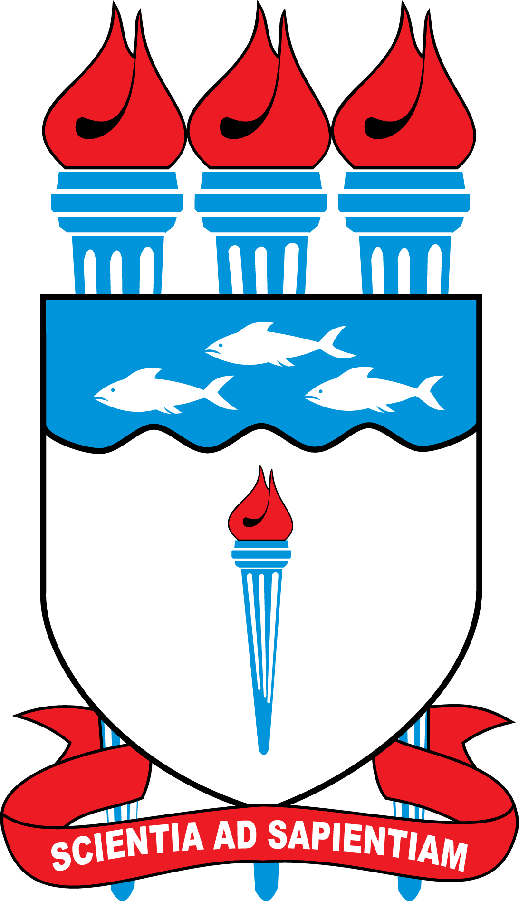

Ir para o conteúdo
ILUSTRATIVO: dados fictícios, não são resultados da pesquisa
logo
UFAL

logo
PPGCS
Simulador didático de métodos estatísticos
Cobertura vacinal infantil em Alagoas, 2000–2024 | PPGCS/UFAL
Modo banca
Versão técnica
Tema
Pausar
Avançar um
quadro
Reiniciar
Velocidade